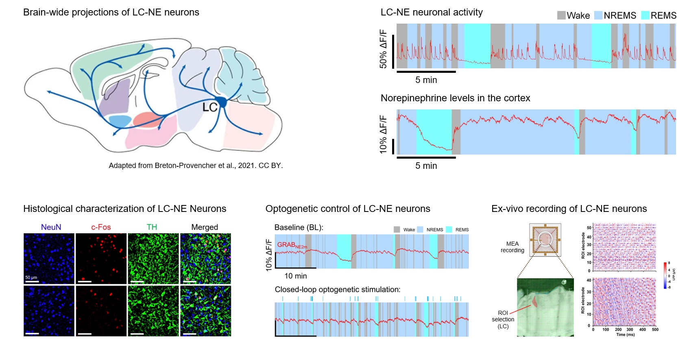
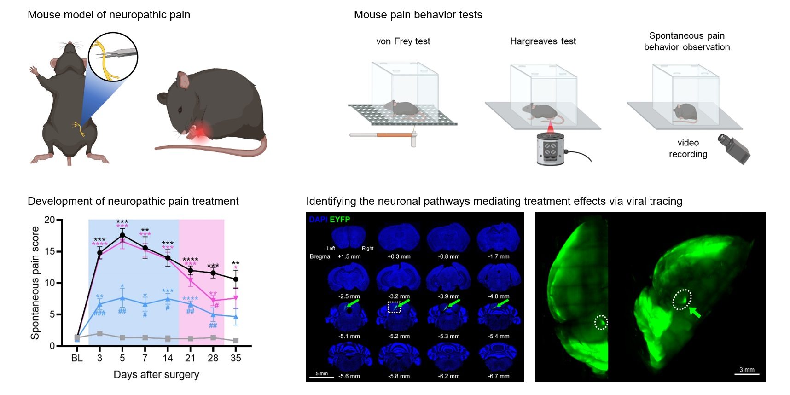
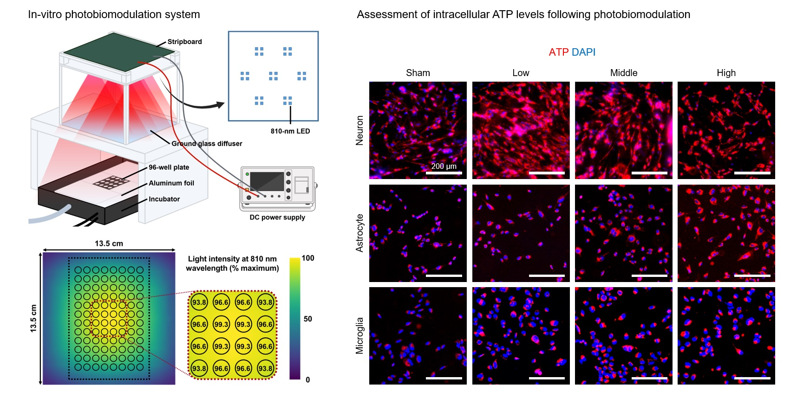
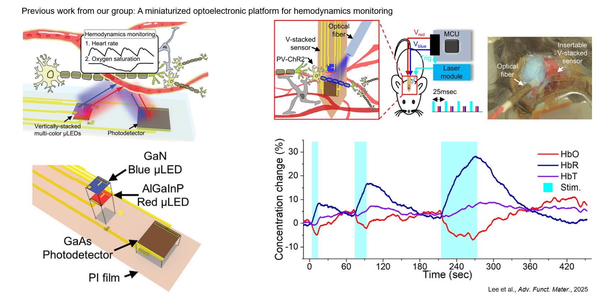
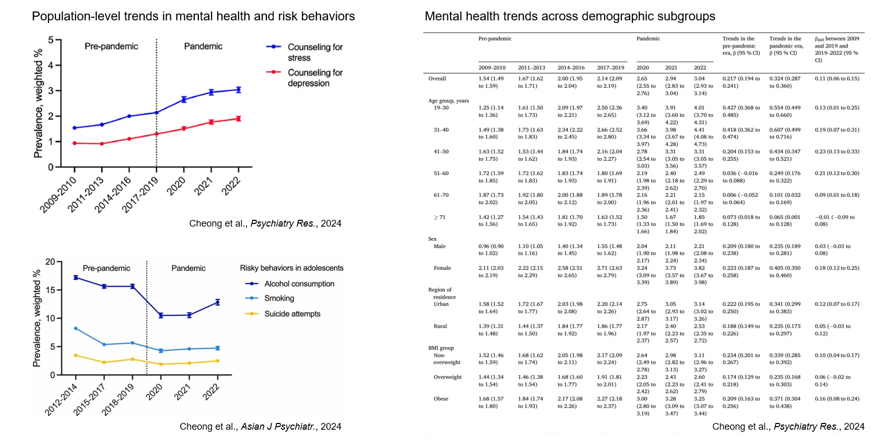

Ongoing Research
LC-NE Regulation of Sleep and Arousal
The sleep–wake cycle is essential for brain health and is tightly regulated by interconnected neural circuits and neuromodulatory systems. I am particularly interested in the locus coeruleus–norepinephrine (LC–NE) system and its state-dependent dynamics across sleep and wakefulness.
LC–NE neurons are highly active during wakefulness, exhibit infra-slow fluctuations during NREM sleep, and become largely silent during REM sleep. These dynamics have important physiological functions: NE oscillations during NREM sleep contribute to glymphatic clearance, while LC silencing and reduced NE signaling are critical for stable REM sleep.
My research investigates how alterations in these state-specific LC–NE dynamics reshape sleep architecture and brain function. Using systems neuroscience approaches including electrophysiology, fiber photometry, and closed-loop optogenetics, I investigate how dysregulated LC–NE activity contributes to sleep disruption and how these mechanisms may link sleep disturbances with neurological and systemic conditions.

Mechanism and Treatment of Neuropathic Pain
Neuropathic pain is a chronic pain condition caused by damage or disease affecting the somatosensory system. It is characterized by spontaneous pain, allodynia, and hyperalgesia and represents a major clinical challenge because its underlying mechanisms are complex and current treatments remain limited.
My research investigates the neural mechanisms underlying neuropathic pain and evaluates non-invasive therapeutic strategies. Using mouse models of peripheral nerve injury, I combine behavioral pain assays with electrophysiology, histology, and circuit-tracing approaches to map the pain-modulatory pathways.

In Vitro Photobiomodulation in Brain Models
Photobiomodulation (PBM) is a non-invasive therapeutic approach that uses red or near-infrared light to modulate cellular function. PBM has gained increasing attention as a potential intervention for neurological and psychiatric disorders, including Alzheimer’s disease and depression. Its proposed mechanisms include enhanced mitochondrial function and ATP production, modulation of reactive oxygen species, and attenuation of inflammatory signaling.
My research focuses on applying PBM to in vitro brain models. I have developed a custom irradiation system that delivers near-infrared light uniformly to cultured cells under controlled conditions. Using this platform, I investigate the cellular mechanisms underlying the effects of PBM, with particular interests in sleep regulation, neural metabolism, and cellular responses to neurodegenerative and neuroinflammatory conditions.

Neurovascular Coupling Monitoring System
Neurovascular coupling (NVC) is the process by which changes in neural activity are translated into local adjustments in cerebral blood flow and oxygenation, ensuring adequate metabolic support for active brain regions. Beyond its fundamental role in brain physiology and functional neuroimaging, impaired NVC has been associated with aging and various neurological disorders, highlighting its potential as a functional biomarker of brain health and disease progression.
My research focuses on developing miniaturized optoelectronic platforms to investigate NVC in the mouse brain. By integrating cell-type-specific optogenetic manipulation with local hemodynamic monitoring, I examine how defined neuronal populations and circuits contribute to vascular responses. I am also interested in applying these platforms to characterize NVC alterations in mouse models of neurological disorders and to longitudinally track neurovascular function across aging within the same animal.

Previous Research
Mental Health Epidemiology
Large-scale population-based cohorts and public health datasets provide a powerful framework for investigating temporal changes in mental health and identifying factors associated with psychological and behavioral outcomes at the population level. By analyzing demographic and health-related variables—including age, sex, residential area, education level, body mass index, and sleep duration—epidemiological approaches can identify long-term trends in mental health outcomes and pinpoint vulnerable demographic cohorts.
In my previous research, I used nationwide public health data from South Korea to investigate changes in mental health and health-risk behaviors before and during the COVID-19 pandemic. These studies examined temporal and demographic patterns in counseling for stress and depression among adults, as well as risky behaviors among adolescents, providing population-level insights into how mental health and related behaviors changed during a major societal disruption.
